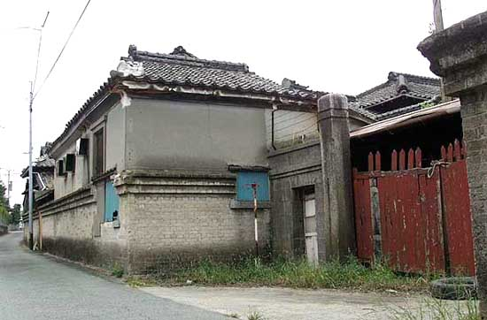
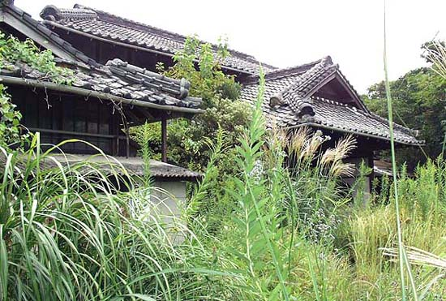

三井不知火荘倶楽部
福岡県大牟田市諏訪町2丁目（2003年9月25日撮影）
近所の人の話によるとここは、「三井さんの倶楽部だった所で、不知火荘倶楽部と呼ばれていた」という。
また、昔ここに住んでいたという人の話では、「三井不知火荘倶楽部は三井港倶楽部の別館として、大事な客をもてなす 和風の料亭だった。閉鎖後は、10年位三井の社宅として利用され、60畳の大広間を仕切って3世帯位が共に暮らしていた」らしい。


BACK